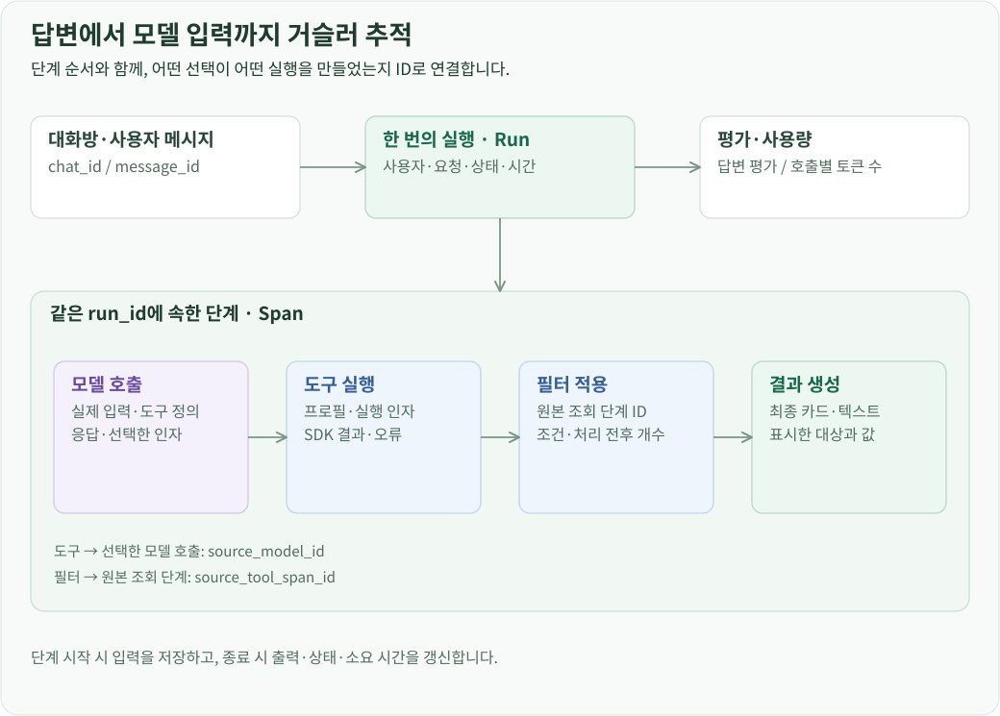
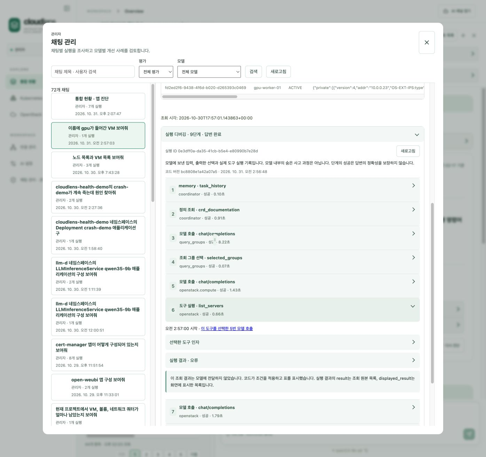
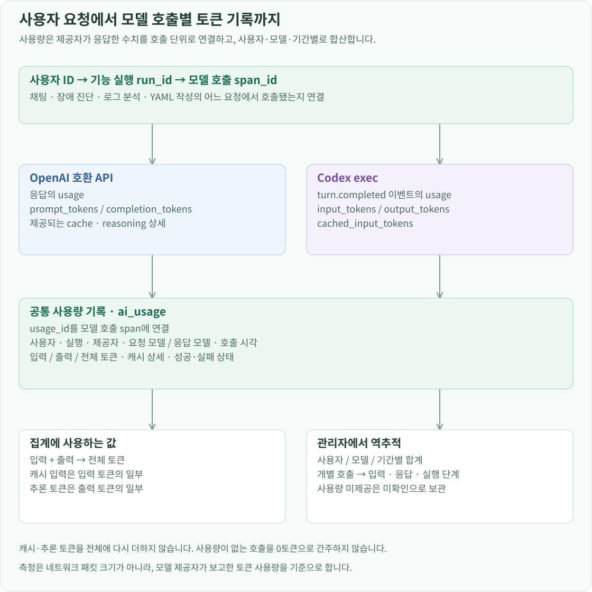

개요
AI 사용 기록은 사용자 요청, 내부 처리 단계, 모델 호출별 사용량을 연결해 저장합니다. 관리자는 이 기록으로 답변이 만들어진 과정을 조사하고, 사용자·모델별 입력·출력 토큰을 집계합니다.
채팅, 통합 현황의 앱 진단, Pod 로그 분석, YAML 작성, AI 연결 테스트를 각각 하나의 실행으로 저장합니다. 모델 호출·도구 실행·필터 적용은 그 실행에 속한 단계로 기록합니다. 한 번의 질문에서 모델을 여러 번 호출하더라도 같은 실행 아래에서 각 호출의 입력·응답과 사용량을 확인할 수 있습니다.
채팅·실행·단계 데이터 모델

실행에는 사용자·채팅·메시지 ID, 요청, 시작·종료 시각, 상태와 코드 버전을 저장합니다. 단계에는 실행 ID와 순서, 종류, 이름, 시작·종료 시각, 소요 시간, 입력과 출력을 저장합니다. 중첩 작업은 parent_id로 연결합니다.
도구 단계의 source_model_id는 그 도구를 선택한 모델 호출을 가리킵니다. 필터 단계의 source_tool_span_id는 필터가 적용된 조회를 가리킵니다. 단순히 시간순 로그를 나열하는 데서 더 나아가, 선택과 실행의 관계를 식별자로 따라갈 수 있게 했습니다.
모델 호출 단계에는 실제로 전송한 messages와 도구 정의, 모델 설정을 저장합니다. 응답에는 선택한 함수와 인자가 들어 있는 tool_calls, 메시지, 종료 이유와 제공자 정보를 보존합니다. 따라서 관리자는 모델이 어떤 선택지를 받은 상태에서 어떤 함수를 골랐는지 확인할 수 있습니다.
호출마다 요청한 모델명과 서버가 응답에 보고한 모델명을 따로 기록합니다. API·Codex 제공 방식, 요청 주소, 추론 설정, 입력·출력 토큰, 출력 상한과 컨텍스트 한도도 해당 호출에 붙습니다. 이후 AI 설정에서 모델을 바꿔도 과거 호출에는 당시 값이 남습니다. 응답 모델명이 없는 호출은 요청한 이름으로 대신 채우지 않고 미보고로 표시합니다.
그 함수를 실행한 단계에는 연결 프로필과 실제 인자, SDK 응답을 남깁니다. 이후 필터 단계는 어느 조회 결과에 어떤 조건을 적용했는지와 처리 전후 개수를 기록합니다. 최종 카드까지 이 순서로 연결하면 잘못된 대상을 조회했는지, 조회는 맞지만 필터가 틀렸는지를 구분할 수 있습니다.
진단은 수집한 원본과 모델에 전달한 필드 추출본도 함께 저장합니다. 어떤 자료를 모았는지뿐 아니라 어떤 필드를 제외했는지, 어떤 추출 규칙을 사용했는지까지 남겨 모델 입력을 재구성할 수 있게 했습니다.
H2의 agent_runs와 agent_spans가 실행과 단계를 저장합니다. 모델 호출 단계의 usage_id는 ai_usage의 호출 기록을 가리킵니다. 같은 호출의 입력·응답과 입력·출력 토큰을 이 식별자로 연결하며, answer_feedback에는 실행별 사용자 평가를 저장합니다.
단계 기록을 남기는 시점
각 단계는 시작할 때 running 상태와 입력을 저장합니다. 작업이 끝나면 출력, 종료 상태, 종료 시각과 소요 시간을 갱신합니다. 입력과 출력은 JSON 형태로 저장하므로 도구 정의나 SDK 응답처럼 중첩된 데이터도 함께 보존할 수 있습니다.
모델 메타데이터 조회와 입력 준비도 추적 대상입니다. 준비 중인 입력을 먼저 저장하고, 모델 서버에 전송하기 직전에 최종 요청으로 갱신합니다. 전송 전에 실패했다면 준비 중이던 입력으로 표시합니다. 서버 호출 오류는 HTTP 상태·오류 응답·요청 ID를, 응답 처리 오류는 처리 단계와 받은 응답을 남깁니다. 길이 제한으로 종료된 경우에는 관측된 입력·출력 토큰과 설정된 한도를 함께 기록해 컨텍스트 소진과 출력 상한 도달을 구분합니다.
도구 실행 결과와 모델에 전달한 내용은 각각 기록할 수 있게 분리했습니다. 모델에 결과를 전달하는 경로에서는 tool_call_id와 실제 전달 문자열을 저장합니다. 목록 조회처럼 결과를 모델에 다시 보내지 않는 경로도 전달 여부를 기록합니다.
저장 전에는 비밀번호·토큰·개인키·Kubernetes Secret 값 등 인식 가능한 민감 필드를 가립니다. 기록에는 가림 여부와 데이터 크기를 함께 남깁니다. 모델 입력과 응답의 주요 기록은 전체 내용을 저장하고, 관리자 상세 화면에서 필요한 단계를 열어 읽습니다.
관리자 화면의 조회 흐름

사용자는 답변에 좋아요·싫어요와 의견을 남깁니다. 관리자는 AI 실행 관리에서 기능, 사용자, 모델과 평가로 기록을 좁힌 뒤 실행을 선택합니다. 모델 필터는 요청 모델명과 응답 모델명 모두로 검색합니다. 실행을 열면 단계 순서와 입력·출력, 오류가 발생한 위치를 조회합니다. 관리자 API는 세션 역할을 확인한 뒤 대상 실행에 접근합니다.
사용자가 채팅을 삭제하면 대화 목록과 메시지는 삭제하고 실행·단계·평가 기록은 보존합니다. 관리자 목록에는 삭제된 대화로 표시하며, 연결 프로필이 삭제된 뒤에도 저장된 입력과 응답을 확인할 수 있습니다.

예를 들어 Deployment 요청에 Pod 결과가 나왔다면 요청 분류 단계의 입력·응답, 조회 도구를 선택한 모델 호출, 실제 실행된 인자, 필터 결과를 차례로 볼 수 있습니다. 각 단계의 ID가 연결되어 있어 이전 질문 해석, 함수 선택, API 응답, 화면 데이터 중 어디에서 대상이 바뀌었는지 확인할 수 있습니다.
사용자 요청에 모델 사용량을 연결하는 방식
서버는 모델 호출을 시작하기 전에 로그인 세션의 사용자 ID와 기능 목적, 호출 ID, 요청한 모델과 시작 시각을 저장합니다. 채팅에서는 대화·메시지 ID를, 앱 진단이나 YAML 작성처럼 채팅 밖에서 실행한 기능에서는 해당 실행 ID를 함께 남깁니다. 호출이 끝나면 같은 기록에 응답 모델, 종료 상태, 소요 시간과 사용량을 갱신합니다.

한 사용자 질문을 처리하면서 그룹 선택, 조회 도구 선택, 필터 선택에 모델을 각각 호출했다면 사용량 기록도 세 건 생깁니다. 각 호출의 토큰을 별도로 기록하므로 최종 답변 길이만으로 사용량을 계산하지 않습니다. 실행 중간에 오류가 발생해도 이미 접수한 호출 기록과 받은 응답은 남습니다.
토큰 수는 모델 제공자가 반환한 사용량 메타데이터에서 읽습니다. HTTP API와 Codex exec는 전달 방식이 달라 제공자 어댑터에서 공통 입력·출력 필드로 변환합니다.
| 실행 방식 | 사용량을 받는 위치 | 읽는 값 |
|---|---|---|
| vLLM 등 OpenAI 호환 API | Chat Completions HTTP 응답의 usage |
prompt_tokens, completion_tokens, total_tokens |
| OpenAI Chat Completions API | HTTP 응답의 usage |
prompt_tokens, completion_tokens, total_tokens |
| Codex exec | --json 표준 출력의 turn.completed 이벤트 |
usage.input_tokens, usage.output_tokens, usage.cached_input_tokens |
예를 들어 제공자가 입력 1,200토큰과 출력 300토큰을 보고하면 해당 호출에 두 값을 각각 저장합니다. 캐시 입력과 추론 토큰을 제공하는 경우에는 입력·출력의 세부 항목으로 보관합니다. 이 값들은 이미 입력·출력에 포함되므로 총합에 다시 더하지 않습니다. 제공자가 반환한 원본 usage와 사용량 출처, 응답·요청 ID도 함께 보존합니다.
사용량 검증에서는 입력·출력 값이 유효한 정수인지, 총합과 일치하는지, 캐시·추론 토큰이 각각 입력·출력보다 크지 않은지 확인합니다. 사용량이 없는 호출은 0으로 채우지 않고 미확인으로 남깁니다. 모델 호출의 성공·실패와 사용량 확인 상태를 따로 관리해, 실패했지만 사용량이 보고된 호출도 기록할 수 있게 했습니다.
관리자 화면의 토큰 사용량 탭은 기간과 사용자 조건으로 호출 기록을 조회합니다. 선택 기간의 입력·출력 합계와 사용자·제공자·모델별 집계, 개별 호출의 시각·기능·실행 상태를 보여줍니다. 합계에는 입력·출력이 모두 확인되고 검증을 통과한 호출을 포함하며, 누락되거나 검증이 필요한 기록은 별도로 확인할 수 있습니다.

모델 호출 단위의 JSONL 추출
관리자는 특정 실행이나 모델별 싫어요 사례를 JSONL로 추출합니다. 한 줄은 한 번의 모델 호출이며, 입력과 관측된 응답, 그 응답으로 실행된 도구들을 함께 담습니다.
각 샘플에는 채팅·실행·호출 ID와 코드·데이터 형식 버전을 붙입니다. 입력은 실제 요청 본문과 SHA-256을, 출력은 모델이 반환한 응답과 종료 이유·사용량을 저장합니다. 여기에 실행된 도구의 인자와 결과, 사용자 평가를 함께 넣으면 같은 입력에 대한 모델의 선택과 그 결과를 한 샘플에서 읽을 수 있습니다.
서버는 실행에 속한 모델 단계를 순서대로 읽고, source_model_id가 같은 도구 실행을 붙입니다. tool_call_id가 있으면 후속 모델 입력에서 그 결과를 사용한 메시지도 연결합니다. 이 구조로 같은 입력·도구 정의를 다른 모델에 재전달하거나 수정한 응답을 붙여 외부 평가·학습 자료를 만들 수 있습니다.
추출 시 검토 상태는 unreviewed, 승인 응답은 빈 값으로 시작합니다. 원래 모델이 반환한 응답은 observed_response에 보존하고, 검토 후 사용할 응답은 approved_response에 별도로 넣도록 데이터 구조를 나눴습니다.